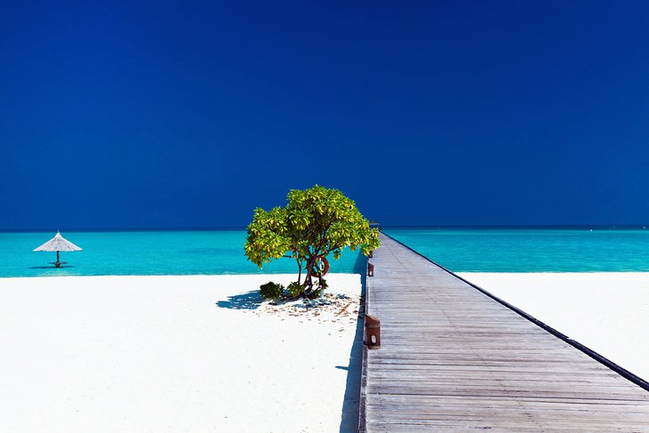

- Maldives 
- Kaua'i, Hawaii
- Mamanuca, Fiji
If slipping into the crystal-clear, soul-warming sea is a top criteria for your perfect tropical vacation, this is the place to do it, as water comprises 99 percent of the Maldives. Male' is the capital city, but most visitors head straight out to one of the remote atolls, where luxury resorts and bone-white beaches fringed by aquamarine waters await. Diving and snorkeling are world-class, and the Maldives is also a top surfing destination with the most popular surf spots in the North and South Male' Atolls.
Other popular activities here include swimming with manta rays and whale sharks as well as big-game fishing. With water being a focal point and so many islands to choose from, the Maldives is also the perfect candidate for a cruise vacation.
Accommodation: Where to stay in the Maldives

Called the Garden Isle, Kaua'i is a tropical Eden, with lush rainforests, waterfalls, and spectacular green coastal peaks. A natural masterpiece of dramatic lava-sculpted landscapes, the island has a more laid-back vibe than its popular sister islands of Maui and Ohau. Though Kauai is known for being home to one of the rainiest places on earth, the island is comprised of several microclimates.
Underwater, you'll find colorful coral reefs, where turtles and tropical fish swim. On land, you can bask on golden beaches, admire the cloud-capped scenery from the cliffs above Hanalei Bay, hike among the velvety peaks of the breathtaking Napali Coast, and explore the deep and jungly 10-mile-long Waimea Canyon. Tropical gardens, waterfalls, cute coastal towns, and fantastic surf breaks are other top tourist attractions.
Accommodation: Where to stay in Kauai_Hawaii

A short boat ride from the gateway town of Nadi, this picture-perfect string of about 20 islands are popular for their gleaming palm-studded beaches, crystal-clear waters, and thriving coral reefs.
One of the planet's top surf breaks, Cloudbreak, lies about a mile away from Tavarua Island Resort, but you can access this legendary break from other island resorts as well. Fijians love children, so this is also a fabulous destination for families with youngsters looking to relax.
Accommodation: Where to stay in Mamanuca